pacman::p_load(corrplot, ggstatsplot, tidyverse)Hands-on Exercise 5: Correlation Matrices
Correlation coefficient is a popular statistic that is used to measure the type of strength of the relationship between two variables. The values of a correlation coefficient ranges between -1.0 and 1.0. A correlation coefficient of 1 shows a perfect linear relationship between the two variables, while a -1.0 shows a perfect inverse relationship between the two variables. A correlation coefficient of 0.0 shows no linear relationship between the two variables.
When multivariate data are used, the correlation coefficients of the pair comparisons are displayed in a table form known as correlation matrix or scatterplot matrix.
There are three broad reasons fooo computing a correlatin matrix:
- to reveal the relationship between high-dimensional variables pair-wisely
- to input into other analyses
- as a diagnostic when checking other analyses
When the data is large, both in terms of the number of observations and the number of variables, Corrgram tends to be used to visually explore and analyse the structure and the patterns of relations among variables. It is designed based on two main schemes:
- rendering the value of a correlation to depict its sign and magnitude
- reordering the variables in a correlation matrix so that “similar” variables are positioned adjacently, facilitating perception
In this hands-on exercise, we will learn how to plot data visualization for correlation matrix in R.
Installing & Launching R Packages
We will use the code chunk below to install and launch the necessary packages.
Importing & Preparing Dataset
Let’s load the dataset that we will be using for this exercise.
wine <- read.csv("data/wine_quality.csv")Correlation Matrix: pairs()
There are few ways to build a scatterplot matrix in R. In this section, we will be creating a scatterplot matrix by using the pairs function of R Graphics.
Basic Correlation Matrix
The code chunk below will create a 11 by 11 matrix of the Wine Quality dataset.
pairs(wine[,1:11])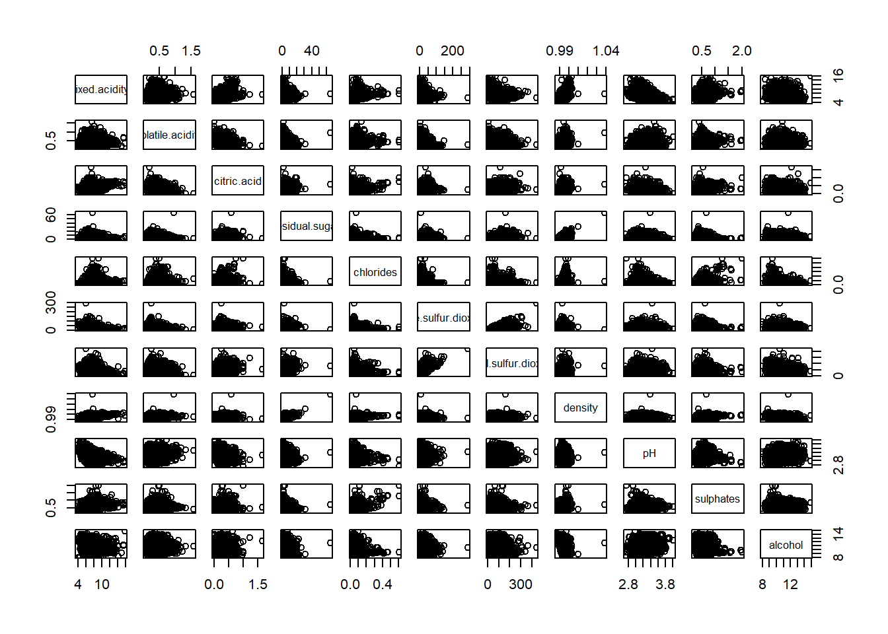
The required input of pairs() can be a matrix or a dataframe. As for the code chunk used, which is relatively simple, uses the default pairs function. We can specify the columns to be used to build the scatterplot matrix.
Upper & Lower Corners
The pairs function of R Graphics provides many customization arguments. For example, it is a common practice to show either the upper half or lower half of the correlation matrix instead of showing both. This is because a correlation matrix is symmetric.
To show the lower half of the correlation matrix, the upper.panel argument will be used as shown in the code chunk below.
pairs(wine[,2:12],
upper.panel = NULL)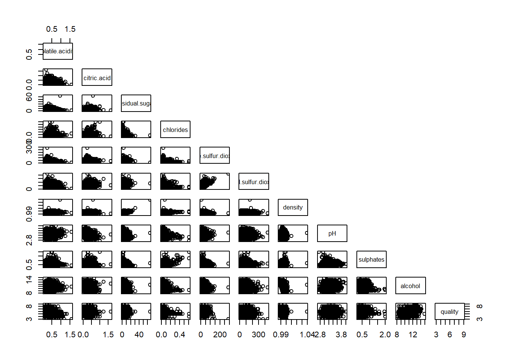
Similarly, we can display the upper half of the correlation matrix by using the code chunk below.
pairs(wine[,2:12],
lower.panel = NULL)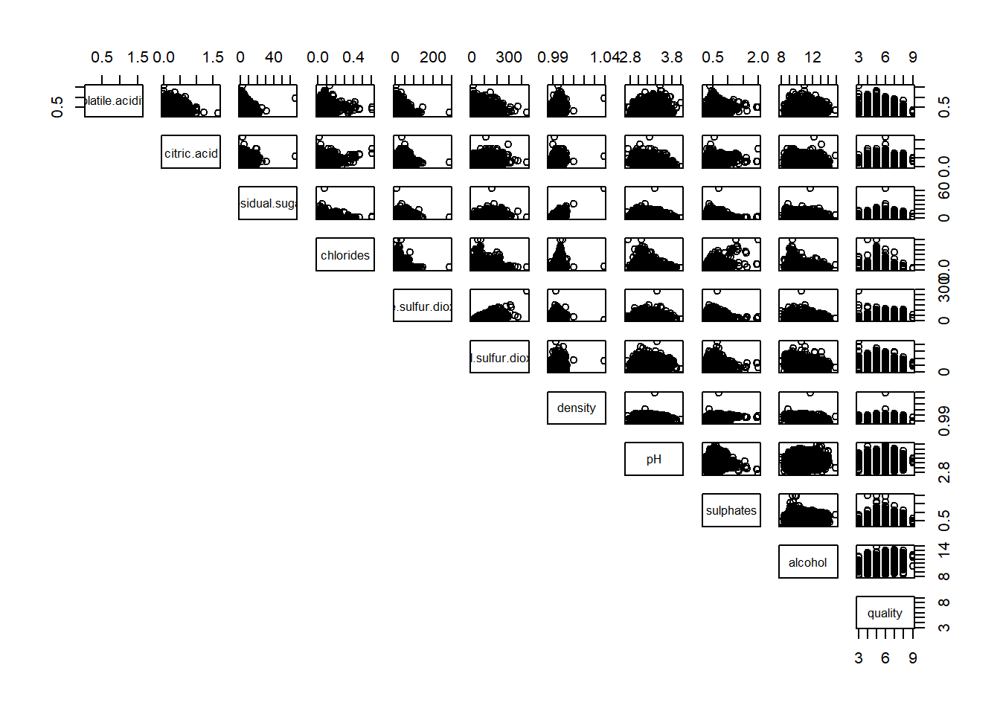
Including Correlation Coefficients
To show the correlation coefficient of each pair of variables instead of a scatterplot, panel.cor function will be used. This will also show higher correlations in a larger font.
panel.cor <- function(x, y, digits=2, prefix="", cex.cor, ...) {
usr <- par("usr")
on.exit(par(usr))
par(usr = c(0, 1, 0, 1))
r <- abs(cor(x, y, use = "complete.obs"))
txt <- format(c(r, 0.123456789), digits = digits)[1]
txt <- paste(prefix, txt, sep = "")
if(missing(cex.cor)) cex.cor <- 0.8/strwidth(txt)
text(0.5, 0.5, txt, cex = cex.cor * (1 + r) / 2)
}
pairs(wine[,2:12],
upper.panel = panel.cor)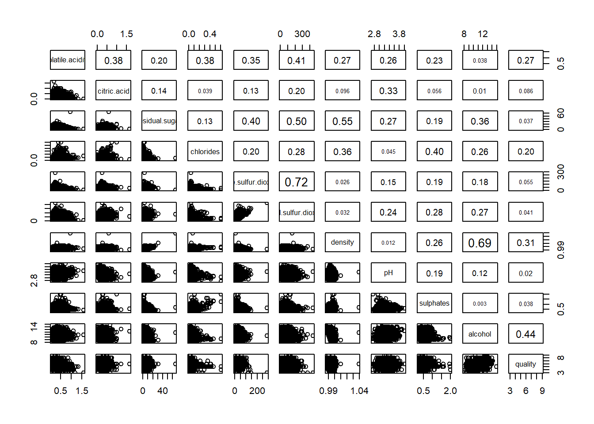
Correlation Matrix: ggcormat()
One of the major limitation of the correlation matrix is that the scatter plots appear very cluttered when the number of observations is relatively large (more than 500 observations). To overcome this problem, Corrgram data visualization technique will be used.
There are three R packages that provide functions to plot corrgram:
- corrgram
- ellipse
- corrplot
On top of that, R packages like ggstatsplot package also provide functions for building corrgram.
In this section, we will visualize correlation matrix by using ggcorrmat() of ggstatsplot.
Basic Plot
One of the advantage of using ggcorrmat() over other methods is that it has the ability to provide a comprehensive and yet professional statistical report as shown in the figure below.
ggstatsplot::ggcorrmat(data = wine,
cor.vars = 1:11,
ggcorrplot.args = list(outline.color = "black",
hc.order = TRUE,
tl.cex = 10),
title = "Correlogram for wine dataset",
subtitle = "Four pairs are not significant at p < 0.05")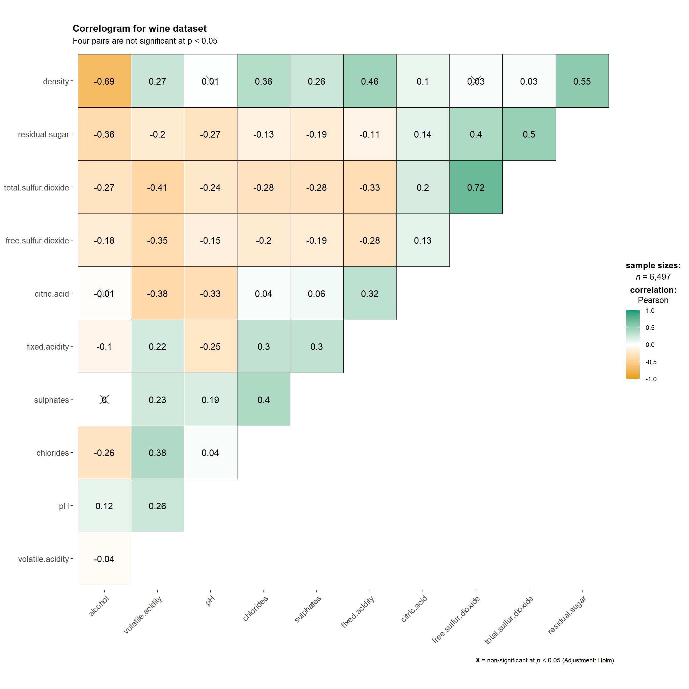
Things to learn about the code chunk above:
- cor.vars argument is used to compute the correlation matrix needed to build the corrgram
- ggcorrplot.args argument provides additional (mostly aesthetic) arguments that will be passed to ggcorrplot:::ggcorrplot function
- the ggcorrplot.args argument should avoid any of the following arguments since they are already internally being used: corr, method, p.mat, sig.level, ggtheme, colors, lab, pch, legend.title, digits
The following code chunk can be used to control specific components of the plot, such as the font size of the x-axis, y-axis and the statistical report.
ggplot.component = list(theme(text = element_text(size = 5),
axis.text.x = element_text(size = 8),
axis.text.y = element_text(size = 8)))Multiple Plots
Since ggstatsplot is an extension of ggplot2, it also supports faceting. However, the feature is not available in ggcorrmat(), but it available in the grouped_ggcorrmat() of ggstatsplot.
grouped_ggcorrmat(data = wine,
cor.vars = 1:11,
grouping.var = type,
type = "robust",
p.adjust.method = "holm",
plotgrid.args = list(ncol = 2),
ggcorrplot.args = list(outline.color = "black",
hc.order = TRUE,
tl.cex = 10),
annotation.args = list(tag_levels = "a",
title = "Correlogram for wine dataset",
subtitle = "The measures are: alcohol, sulphates, fixed acidity, citric acid, chlorides, residual sugar, density, free sulfur dioxide and volatile acidity",
caption = "Dataset: UCI Machine Learning Repository"))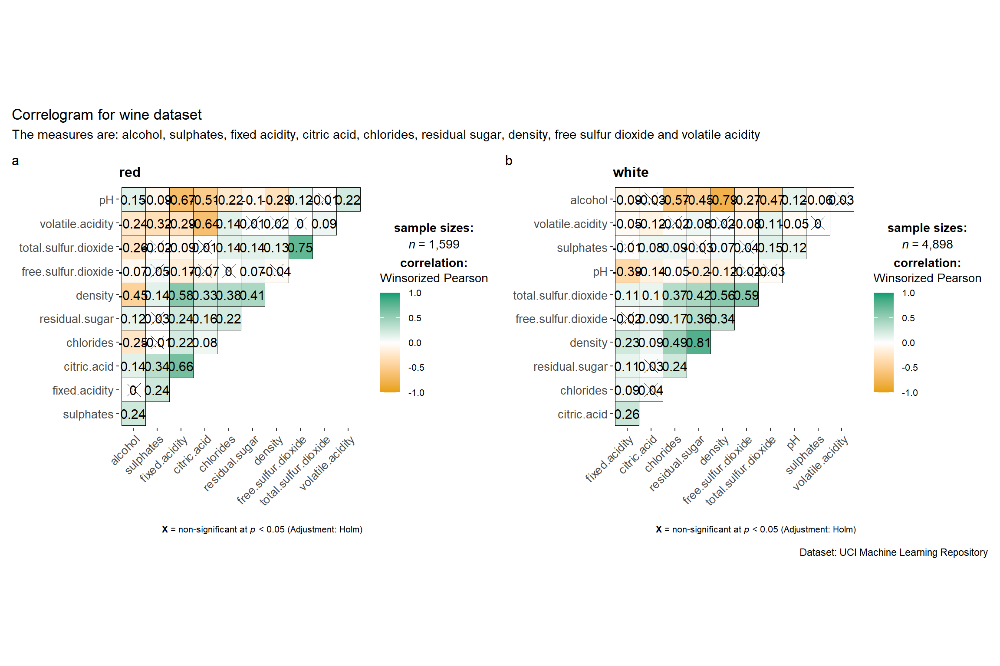
Things to learn from the code chunk above:
- to build a facet plot, the only argument needed is grouping.var
- behind group_ggcorrmat(), patchwork package is used to create the multiplot
- plotgrid.args argument provides a list of additional arguments passed to patchwork::wrap_plots, except for the guides argument which is already separately specified earlier
- likewise, the annotation.args argument is calling plot annotation argument of patchwork package
Correlation Matrix: corrplot
Before we can plot a corrgram using corrplot(), we need to compute the correlation matrix of wine data frame. In the code chunk below, cor() of R Stats is used to compute the correlation matrix of wine dataframe.
wine.cor <- cor(wine[,1:11])Next, corrplot() will be used to plot the corrgram by using all the default settings as shown in the code chunk below:
corrplot(wine.cor)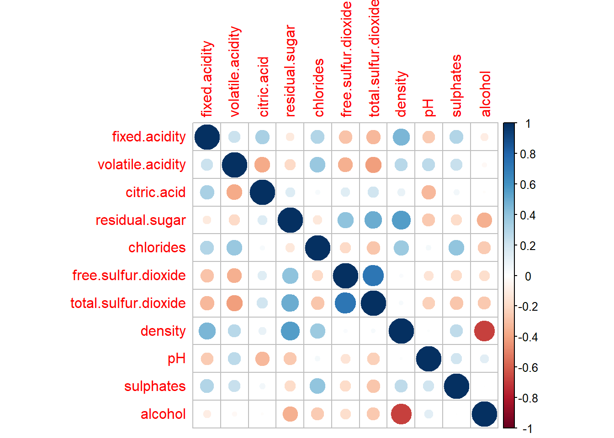
From the above plot, notice that the default visual object used to plot the corrgram is circle, and the default layout of the corrgram is a symmetric matrix. Also, the default colour scheme is diverging bllue-red. Blue colours are used to represent pair variables with a positive correlation coefficient while red colours are used to represent pair variables with negative correlation coefficient. The intensity of the colour, aka the saturation, is used to represent the strength of the correlation coefficient. Darker colours indicate relatively stronger linear relationship between the paired variables. On the other hand, lighter colours indicate relatively weaker linear relationships.
Visual Geometrics
In the corrplot package, there are seven visual geometrics (parameter methods) that can be used to encode the attribute values. They are:
- circle
- square
- ellipse
- number
- shade
- color
- pie
As shown in the previous section, the default visual geometric of corrplot matrix is circle. However, this default setting can be changed by using the method argument as shown in the code chunk below.
corrplot(wine.cor,
method = "ellipse")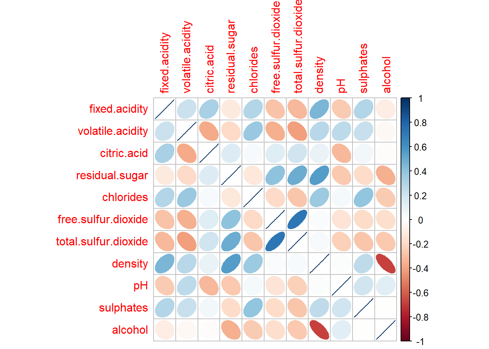
Layouts
corrplot() supports three layout types:
- full
- upper
- lower
The default is full, which means it will display the full matrix. The default settings can be changed by using the type argument of corrplot()
corrplot(wine.cor,
method = "ellipse",
type = "lower")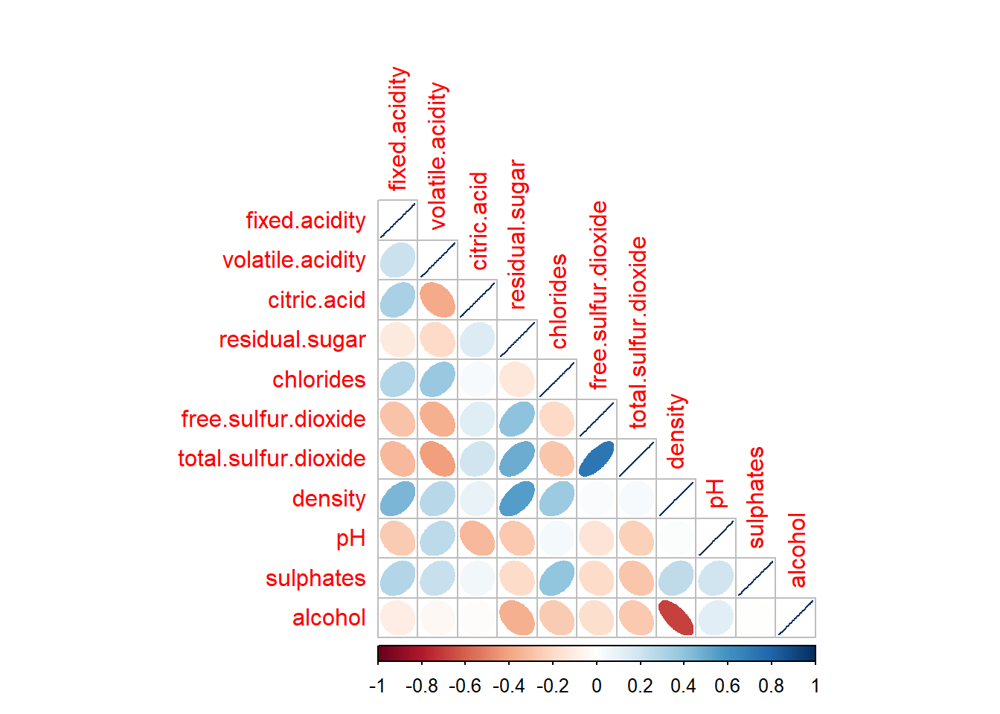
The default layout of the corrgram can be further customized. For example, arguments diag and tl.col are used to turn off the diagonal cells, and to change the axis text label colour to black colour respectively, as shown in the code chunk below.
corrplot(wine.cor,
method = "ellipse",
type = "lower",
diag = FALSE,
tl.col = "black")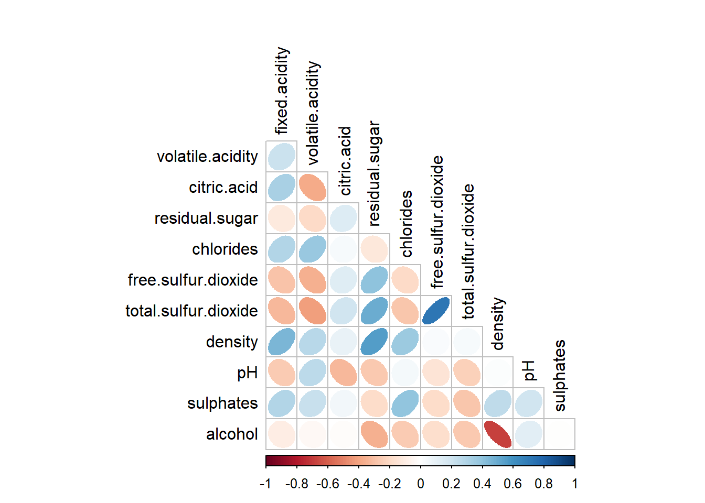
Mixed Layouts
With corrplot package, it is possible to design corrgram with mixed visual matrix of one half, and numerical matrix on the other half. In order to create a coorgram with mixed layout, the corrplot.mixed(), a wrapped function for mixed visualization stype, will be used.
corrplot.mixed(wine.cor,
lower = "ellipse",
upper = "number",
tl.pos = "lt",
diag = "l",
tl.col = "black")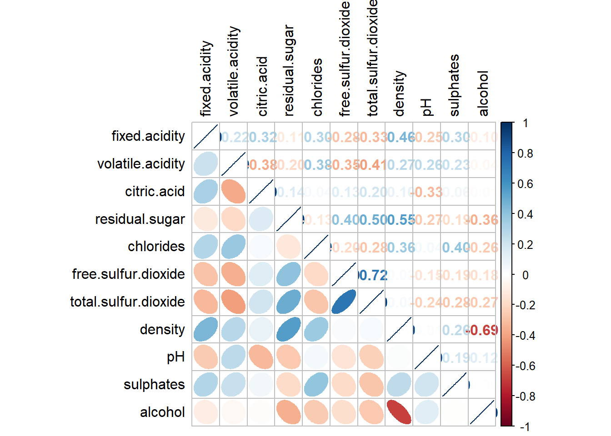
Notice that the argument lower and upper are used to define the visualization method used. In this case, ellipse is used to map the lower half of the corrgram, while the numerical matrix is used to map the upper half of the corrgram. The tl.pos is used to specify the placement of the axis labels. Lastly, the diag argument is used to specify the glyph on the prinicpal diagonal of the corrgram.
corrgram with significant test
In statistical analysis, we are also interested to know which pair of variables has a correlation coefficient that is statistically significant. The plot below shows a corrgram that is combined with the significant test. The corrgram reveals that not all correlation pairs are statistically significant.
With corrplot package, we can use the cor.mtest() to compute the p-values and confidence interval for each pair of the variables.
wine.sig = cor.mtest(wine.cor,
conf.level = .95)We can then use the p.mat argument of corrplot function as shown in the code chunk below.
corrplot(wine.cor,
method = "number",
type = "lower",
diag = FALSE,
tl.col = "black",
tl.srt = 45,
p.mat = wine.sig$p,
sig.level = .05)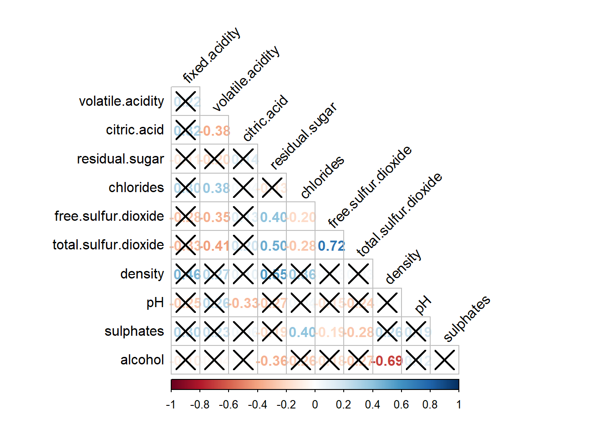
Reordering a corrgram
Matrix reorder is very important for mining the hidden structure and pattern in a corrgram. By default, the order of attributes of a corrgram is sorted according to the correlation matrix. The default setting can be overwritten by using the order argument of corrplot(). Currently, corrplot package supports four sorting methods:
- AOE is for the angular order of the eigenvectors
- FPC for the first principal component order
- hclust for hierarchical cluster order and hclust.method for the agglomeration method to be used
- alphabet for the alphabetical order
corrplot.mixed(wine.cor,
lower = "ellipse",
upper = "number",
tl.pos = "lt",
diag = "l",
order = "AOE",
tl.col = "black")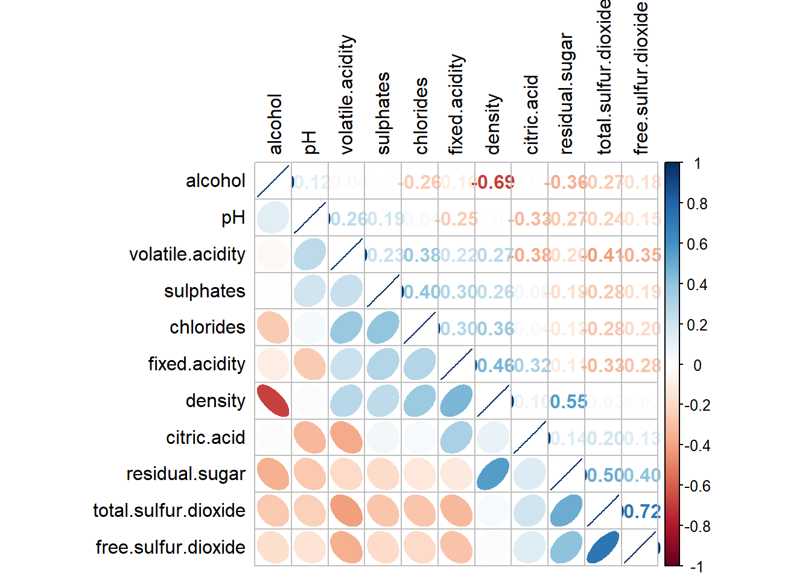
If we are using hclust.corrplot(), we can draw rectangles around the corrgram based on the results of the hierarchical clustering.
corrplot(wine.cor,
method = "ellipse",
tl.pos = "lt",
tl.col = "black",
order = "hclust",
hclust.method = "ward.D",
addrect = 3)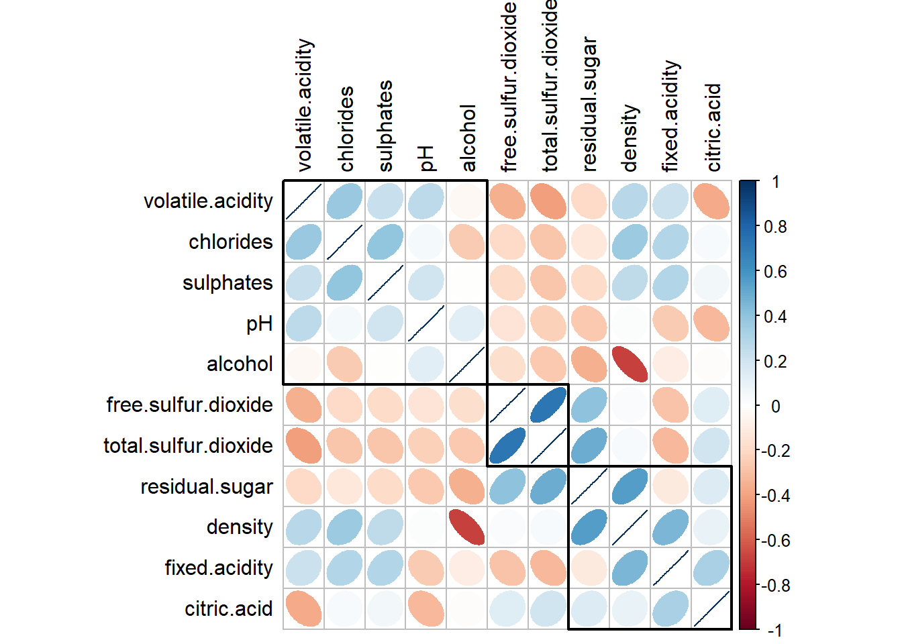